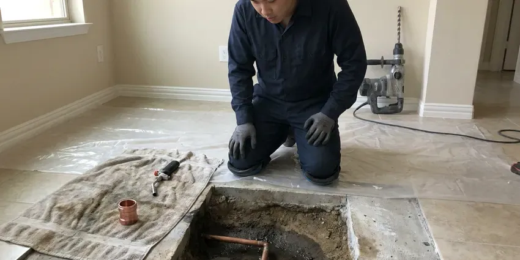

Trenchless Sewer Line Repair in Morristown, TN
Keep your pavers, landscaping and concrete in place. Our crew in Morristown, TN fixes cracked and root-filled sewer lines from small access points.
- Fast, Non-Invasive Repairs
- Durable Solutions
- Before and After Video
- Expert Certified Plumbers

Get Professional Sewer Line Repair in Morristown, TN.
Our team provides reliable and effective trenchless solutions for your home's plumbing.
Reliable Trenchless Sewer Line Repair in Morristown, TN
BGV Plumbing sees many older Tennessee sewer lines made of clay tile, cast iron or Orangeburg fiber pipe that have cracked, offset or filled with roots. We camera inspect, measure and locate the damage, then choose the trenchless method that suits your pipe.
Our expertise includes:
- Cured-In-Place Pipe Lining
- Executing pipe bursting for full sewer line replacement.
- Pinpointing complex sewer line issues with advanced cameras.

Additional Plumbing Repair Services in Morristown, TN
We offer expert plumbing repair services across Morristown, TN to stop leaks, clear blockages, and keep every fixture working the way it should.


Customers
Why Choose BGV Plumbing for Trenchless Sewer Line Repair in Morristown, TN?
Our expertise in trenchless technology provides a superior alternative for residents in Morristown, offering a cleaner, quicker and often more cost-effective way to restore your sewer system.
- Minimal Disruption, We fix your sewer lines with only one or two small access points, sparing your lawn and hardscapes.
- Less Restoration, Small access points mean less concrete cutting and landscape repair.
- Long-Life Materials, Liners and HDPE pipe resist roots and corrosion for decades.
Citywide Coverage
Homes, rentals and small commercial buildings anywhere in Morristown can benefit from trenchless repair. Our equipment fits tight lots, side yards and alley access points.
Experienced Team
The team combines sewer camera experience with excavation know-how, so they can read a line accurately and choose the right fix. They have worked on lines running under slabs, driveways and mature landscaping.
Safety-First Approach
Any digging starts with an 811 call so buried utilities are marked before we break ground. Access pits are shored and barricaded while in use.
Trusted Certified Morristown Plumbing Services Professionals
At BGV Plumbing, we take pride in providing certified plumbing services throughout Morristown, TN. Backed by recognized industry credentials, our experienced plumbers combine technical skill with genuine customer care. Whether it is repair, installation, or maintenance, we follow strict safety and quality standards to deliver long-lasting results you can trust.
Call Us Now PHCC Plumbing Contractor Recognition
PHCC Plumbing Contractor Recognition Better Business Bureau (BBB) Accreditation
Better Business Bureau (BBB) Accreditation Angi Certified Pro
Angi Certified Pro ISO 9001 Quality Management Certification
ISO 9001 Quality Management CertificationLong-Lasting Trenchless Sewer Line Repair Services in Morristown, TN
Trenchless vs Traditional Sewer Repair Costs in Morristown, TN
While the upfront cost of trenchless sewer repair in Morristown, TN can sometimes be comparable to or slightly higher than traditional methods, the overall savings are often substantial. This is because trenchless repairs eliminate the need for extensive excavation, backfilling and landscape restoration. Homeowners save money on repairing driveways, patios and gardens, making it a more sensible choice in the long run for many.

Cured-In-Place Pipe Relining in Morristown, TN
CIPP relining creates a new pipe within an existing damaged sewer line. A resin-saturated felt tube is inserted into the old pipe and then inflated, curing in place to form a smooth, durable and watertight liner. This technique is excellent for repairing cracks, leaks and minor offsets without needing to dig up the entire line. It is a fast and effective solution for many common sewer problems faced by Tennessee homeowners.
Pipe Bursting Sewer Line Replacement in Morristown
Pipe bursting is a trenchless method used for full sewer line replacement. It involves pulling a new pipe through the old one while breaking apart the existing pipe. This creates a seamless, durable replacement, often using high-density polyethylene pipe, which is very resistant to corrosion and root intrusion, common problems in older Morristown homes. This method is well suited when the existing pipe is severely damaged or collapsed.
Sectional Point Repair in Morristown
When only one section of a line is damaged, a point repair can fix it without lining the whole length. We position a short resin liner at the damaged spot using the camera and inflate it until it cures. Point repairs are a cost-effective fix for a single crack, hole or root entry. They are common on otherwise healthy lines.
Cost Comparison of Trenchless vs Traditional in Morristown, TN
While the upfront cost of trenchless repair might sometimes seem higher than traditional excavation, it often becomes more cost-effective when factoring in the savings on landscaping, driveway or foundation repair. For many Morristown, TN homeowners, avoiding extensive property restoration makes trenchless the more economical long-term choice.
Pipe Bursting in Morristown, TN
Pipe bursting replaces a badly damaged line by pulling a bursting head through the old pipe. The head breaks the old pipe outward while new HDPE pipe follows behind it. Bursting is ideal for collapsed or severely offset lines that cannot be lined. It typically requires an entry pit and an exit pit.
Trenchless vs Traditional Sewer Repair Cost in Morristown, TN
Point repairs often cost $1,500 to $3,500, while full lining of a residential lateral commonly runs $4,000 to $12,000 depending on length and diameter. Pipe bursting typically ranges from $5,000 to $15,000. Traditional excavation can be cheaper upfront on short, shallow runs, but restoring concrete and landscaping can quickly close the gap. We price both options so you can decide.

Commercial Trenchless Sewer Line Repair in Morristown, TN
For businesses in Morristown, TN, minimizing disruption is essential. Our commercial trenchless sewer line repair services offer a discreet and efficient way to address sewer issues without impacting business operations or customer access. Whether it is a restaurant, office building or retail space, we provide robust trenchless solutions that restore sewer function quickly, so your business can keep operating smoothly.
Trenchless Sewer Line Repair Near Me in Morristown, TN
Our team understands the plumbing infrastructure and environmental factors in Morristown, allowing us to deliver tailored trenchless sewer repair solutions right in your neighborhood. Trust the local professionals who know your area best for dependable service.
Our team is always ready to head out to your location, offering the latest in trenchless technology. We understand the local infrastructure and common issues affecting sewer lines in Morristown, ensuring a targeted and effective repair every time.
BGV Plumbing at a Glance
- Licensed and insured plumbers serving Morristown, TN
- 24/7 emergency service with same-day scheduling
- Clear written estimates, no hidden fees
- 4.9-star rated by 932+ Tennessee customers
Morristown Map
Morristown Information
- Population
- 32,099
- Area codes
- 423/865/931
- Service area
- Morristown and communities within 40 miles
- Nearby
- Knoxville, Kingsport, Johnson City, Bristol
Much of Tennessee sits on clay soils over limestone, and shallow rock can make digging for sewer and water line repairs slower and harder. For homes in Morristown, TN, trenchless sewer line repair protects underground pipes from shifting ground and preserves established landscaping from disruptive excavation.
Expert Services
Trust our professionals for reliable BGV Plumbing solutions in Morristown, TN.
Our Specialized Plumbing Services in Morristown, TN
At BGV Plumbing, we provide a complete range of plumbing services across Morristown, TN. From leak detection to full system installations, our team ensures fast, precise, and affordable service for both residential and commercial properties. Explore our core services below:


How Our Trenchless Sewer Line Repair Process Works in Morristown, TN
Here is a step-by-step look at how BGV Plumbing performs trenchless sewer line repair in Morristown, ensuring a lasting solution.
Request a Quote
Contact BGV Plumbing at (615) 518-0893 to schedule an initial consultation. We will discuss your sewer line issues and arrange for a professional inspection at your Morristown property.
Sewer Line Inspection
We use sewer camera technology to perform a thorough inspection of your pipes. This allows us to accurately diagnose the problem and determine if trenchless repair is the best option.
Prepare Access Points
Only one or two small access points are dug, depending on the chosen trenchless method, pipe bursting or CIPP lining. This limits disruption to your landscape and foundation.
Frequently Asked Questions About Trenchless Sewer Line Repair in Morristown
Point repairs usually cost $1,500 to $3,500. Full lining often runs $4,000 to $12,000, and pipe bursting typically ranges from $5,000 to $15,000 depending on length, depth and access. We price your job after a camera inspection.
Trenchless sewer line repair is a complex process requiring special equipment, expertise and adherence to strict safety and plumbing codes. It is definitely not a DIY project. Always hire a licensed and experienced plumbing professional like BGV Plumbing for trenchless repairs so the job is done correctly and safely.
For pipe bursting, we typically use high-density polyethylene pipe, known for its strength, flexibility and resistance to corrosion and roots. For CIPP relining, a felt liner saturated with epoxy resin, such as products from Perma-Liner or NuFlow, is used to create a new, seamless pipe within the old one.
Many cities require a permit for sewer replacement or lining, especially if work extends into the public right of way. We handle permits when they are needed.
Yes, trenchless sewer line repairs generally require permits from the local Morristown building and plumbing departments. BGV Plumbing handles all necessary permitting so your repair is fully compliant with all local codes and regulations in Tennessee.
Yes. Lining is often the best way to repair cast iron or ABS drains under a slab, avoiding jackhammering floors across the home.
Trenchless repair is very versatile and effective for issues like cracks, fractures, root intrusion and minor collapses. If the pipe has completely disintegrated, has severe offsets or a major belly, traditional excavation might be a more suitable option. A video inspection will determine the best approach.
Most trenchless sewer line repairs can be completed in one to three days, significantly faster than traditional excavation methods, which can take a week or more. The exact timeline depends on the length of the pipe, the severity of the damage and the specific trenchless technique used.
What People Are Saying About Our Plumbing Experts?

Mark T.
When our office needed drain cleaning, BGV Plumbing provided quick, reliable service. The plumber arrived on time and made sure every drain flowed perfectly before leaving. Very satisfied.
Drain Cleaning · Knoxville, TN
Patricia H.
We had a slab leak that two other companies could not find. BGV Plumbing located it in under an hour, explained our options, and the price matched the quote to the dollar.
Slab Leak Repair · Chattanooga, TN
Robert G.
The trenchless sewer replacement saved our front yard. They walked us through the camera inspection footage first so we knew exactly what we were paying for.
Sewer Line Replacement · Kingsport, TN
Laura S.
I scheduled a water heater replacement, and the team made the process smooth and affordable. The new unit works perfectly, and they cleaned up after completing the job.
Water Heater Replacement · Kingsport, TNJames P.
Our commercial plumbing system had a leak under the sink, and BGV Plumbing handled it professionally. The plumbers arrived quickly and restored everything without disruption to our customers.
Commercial Plumbing · Johnson City, TNSofia M.
Two new toilets installed in one visit, no mess left behind, and the tech even adjusted a faucet he noticed was dripping. Fair pricing and really friendly.
Toilet Installation · Bristol, TN